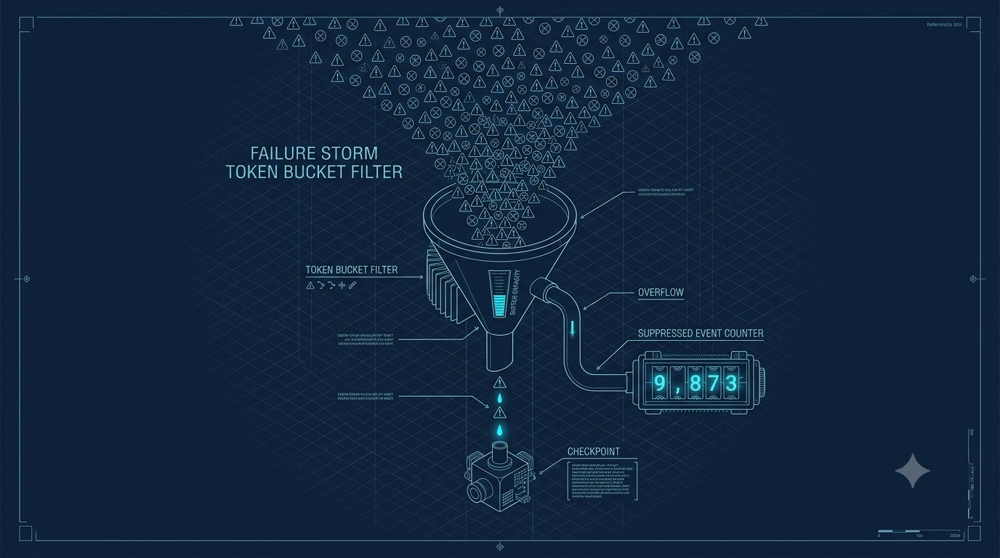

Chapter 07
Surviving Failure Storms
Here is the design instinct most observability tooling gets backwards: failures are not independent, they are correlated. When a dependency dies you don't get one failure — you get ten thousand identical ones in a minute. So we design for the 100%-failure case, not the 0.1% one. This chapter is about the gate that keeps a storm from turning your safety net into the outage.

A cyan-on-navy blueprint-style editorial illustration of a failure storm: hundreds of identical small error glyphs raining down toward a funnel/token-bucket that lets only a few drops through into a single labelled checkpoint, while a counter tallies the suppressed rest. Thin technical schematic linework, drafting grid, one bright cyan accent on the drops that pass. No readable text baked in. ~1280×720px, 16:9, centred with safe margins.
Generate this with your image agent, then drop the file here.
The storm math nobody plans for
Do the arithmetic once and you never forget it. A shared dependency — a database, a downstream API, a cache — goes down. Every request that touches it now fails, and they fail the same way, all at once. On a busy service that is not a handful of errors; it is tens of thousands of identical exceptions inside sixty seconds.
Now imagine LinkLog with no containment. Each failure commits a .llog artifact, so that's 10,000 artifacts. The sidecar dutifully analyses each one, so that's 10,000 AI analyses. And if analysis opens a PR or a ticket, that's 10,000 PRs. All for one bug. The tool you installed to survive incidents just became the second incident — and it did it at exactly the moment you could least afford it.
Rate limiting here is per-signature, not global. Two different bugs never starve each other — each gets its own budget. But a storm of the same signature is capped hard, by design. That is the whole point: collapse the redundant copies, keep the distinct ones.
The gate, in code
LinkLog contains the storm at the SDK, before an artifact ever hits the disk. You opt into a tighter or looser cap with one argument to init(). Example first — here is a high-traffic service dialling its per-signature budget down, then reading back how many commits got suppressed:
payment_api/bootstrap.pyimport llog
llog.init(
service="payment-api",
# default is 10 commits / signature / minute;
# a very high-traffic service can go lower.
max_commits_per_min=5,
)
# ...later, from a health endpoint or a metrics scrape:
print("suppressed commits:", llog.stats.suppressed)
That's the entire operator-facing surface. Everything below happens inside the SDK on the failure path, and you never call it directly. But you should know exactly how it decides, because the behaviour under a storm is a promise you're relying on.
Step one: a cheap local signature
Before the limiter can cap a storm it has to know two failures are "the same." It builds a signature from three cheap pieces: the exception type, the top (innermost) stack frame, and the intent name. That combination is deliberately coarse — it's not the sidecar's authoritative fingerprint — but it's exactly enough to collapse a burst of one bug on one process:
llog/ratelimit.pydef signature(exc: BaseException, intent_name: str = "",
tb: TracebackType | None = None) -> str:
try:
exc_type = type(exc).__name__
return f"{exc_type}|{_top_frame(...)}|{intent_name}"
except Exception:
# degrade to the type alone — still groups the common case
return type(exc).__name__
Why include the intent name and the failing function, not just the exception type? Because two distinct bugs that both raise ValueError must not share a budget — if they did, a noisy bug would starve a quiet one right out of the record. The signature keeps distinct bugs on separate buckets so they don't crowd each other out. Notice too that the line number is dropped on purpose: it moves on every edit, and a burst of one bug shares a type, a function, and an intent regardless.
LinkLog is offline-first. When the control channel is down — an outage, exactly when failures spike — these local caps are all the containment there is. They have to survive a fleet storm unaided, with no help from the control plane. So the SDK fails open to these local caps: if the limiter itself hits an error it allows the commit rather than block your pipeline. Failing closed would silence all reporting during a storm, which is worse than the storm.
Step two: a token bucket per signature
Each signature gets its own token bucket that allows up to max_commits_per_min commits per minute — default 10. The bucket starts full, so the very first failure of any signature always commits; you never miss the opening shot of a new bug. When the bucket empties, the SDK discards that buffer — no artifact — and counts the suppression instead:
llog/ratelimit.py — Limiter.check(sig) if b.tokens >= 1.0:
b.tokens -= 1.0
# hand back the count dropped since last commit, then reset
n, b.suppressed = b.suppressed, 0
return True, n
b.suppressed += 1
return False, 0
Suppressed, not lost
This is the part that makes the cap safe to trust. Suppression does not erase the fact that a failure happened — it drops the redundant copy while keeping the count. When the next commit for a signature is allowed, the accumulated suppressed count rides out on that ERROR event as a vendor-tagged field:
llog/tracker.py — _capture_and_commit()sig = ratelimit.signature(exc, s.intent_name, tb)
allowed, suppressed = limiter.check(sig)
if not allowed:
s.buffer.discard() # no artifact for this one
stats.suppressed += 1 # but it is counted
return None
# allowed: the dropped count rides this ERROR event
emit_error(exc, tb, suppressed_since_last=suppressed)
s.finish()
return s.buffer.commit()
So a storm that suppressed 9,997 of 10,000 still reports that all 10,000 happened. You keep one representative checkpoint with full forensic context and a count of how many identical siblings it stood in for. That's the trade: you lose the redundant copies, never the knowledge that they occurred.
Every failure path — the @llog.intent decorator, the sys.excepthook, the 5xx middleware — routes through this same _capture_and_commit gate. There is no side door. That's what lets you reason about storm behaviour as a single property of the SDK rather than something you have to re-verify per integration.
Defense in depth downstream
The SDK cap is the first line, not the only one. Even after a commit, the sidecar dedupes by fingerprint — its own authoritative one, stronger than the SDK's cheap signature — before it spends anything on expensive AI analysis. And there are hard caps on AI, PR, and ticket actions per fingerprint per window. Three layers, each catching what the last let through. We cover the sidecar's half in full in Chapter 9; for now just know the storm meets more than one wall.
Tuning it in practice
The default of 10 commits per signature per minute is a sane starting point for most services. Adjust it deliberately:
- Raise it only if you genuinely want more samples of the same failure — say, a flaky bug where the state varies run to run and a handful of extra checkpoints helps.
- Lower it for very high-traffic services, where even a short storm at 10/min is more artifacts than you'll ever read.
- Watch
llog.stats.suppressedas a storm signal. A rising suppressed count is not a problem to fix — it's the containment working, and a useful thing to graph next to your error rate.
You now trust the SDK to survive its worst hour. Next we make that trust precise: Chapter 8 lays out the exact guarantees LinkLog gives you — and, just as importantly, the ones it deliberately doesn't.